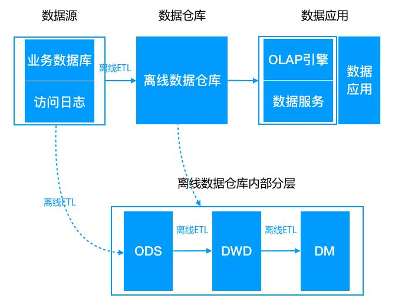
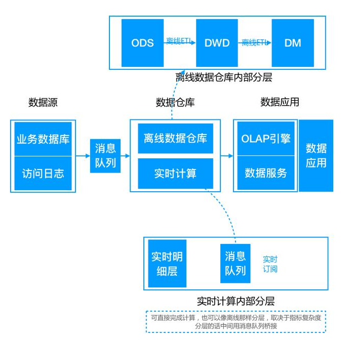
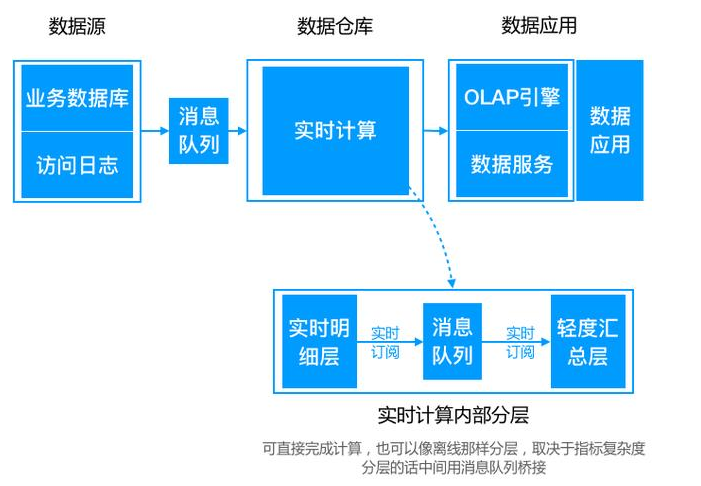
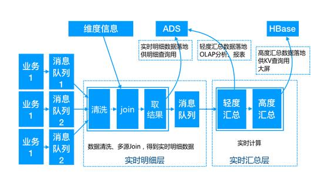
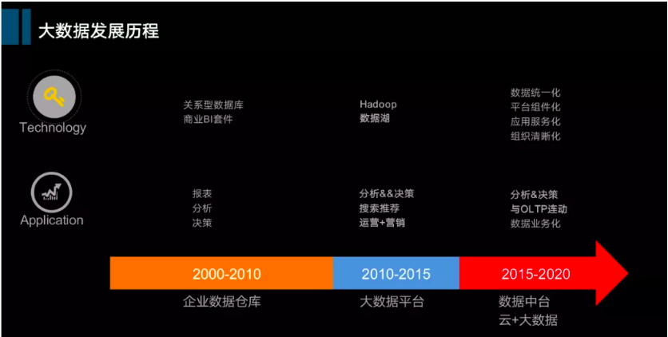
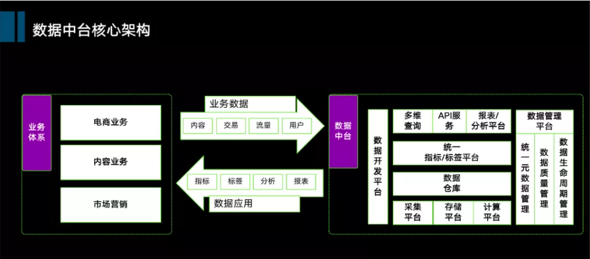
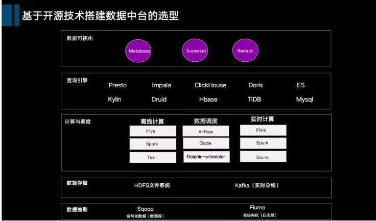
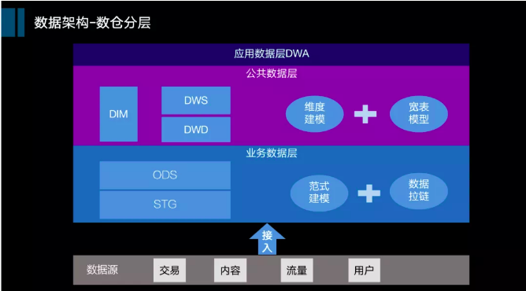
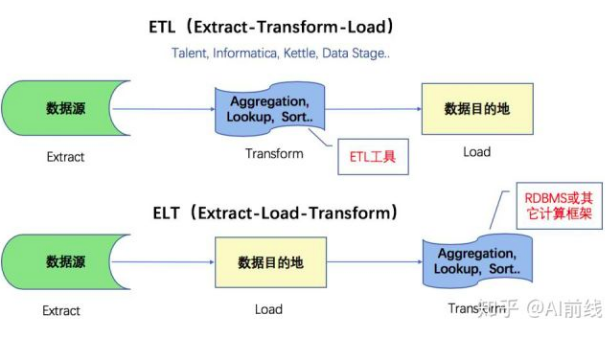

本阶段想做统计服务，由于之前写SQL的糟糕体验，这次准备对统计做一番调研，来设计一个好扩展、性能高的统计服务。用了一周左右的时间进行了梳理，写成博客做个分享。
本篇是本系列第一篇，主要介绍数据仓库与数据中台概念
数据仓库
几个术语
OLTP(On-Line Transaction Processing)，在线事务处理，操作型处理
OLAP(On-Line Analytical Processing)，在线分析处理，分析型处理
ODS(Operational Data Store)，操作数据存储，为多个数据源聚合数据时做临时存储使用
DW(DataWareHose)，数据仓库，一致的、准确的、干净的数据，最细粒度的数据
DM(Data Market)，数据集市层，面向主题来组织数据，是对DW层数据的轻度汇总
ADS(Application Data Store)，应用数据存储，数据的应用层存储
架构的演变
离线架构

业务数据通过ETL工具经过提取（Extract）到ODS中，然后在ODS中进行清理（Clean）、转换(Tranform)，最终加载(Loading)到DW中。然后在DW中，面向主题（应用）进行初步的统计，存储到DM中。最后数据应用层，使用存储在DW、DM中的数据使用，为数据业务提供支持。
lamda架构

随着人们对系统的实时性要求的提高，为了计算一些实时指标，就在原来离线数仓的基础上增加了一个实时计算的链路，并对数据源做流式改造（即把数据发送到消息队列），实时计算去订阅消息队列，直接完成指标增量的计算，推送到下游的数据服务中去，由数据服务层完成离线&实时结果的合并。
注：流处理计算的指标批处理依然计算，最终以批处理为准，即每次批处理计算后会覆盖流处理的结果。（这仅仅是流处理引擎不完善做的折中）Kappa架构

Lambda架构虽然满足了实时的需求，但带来了更多的开发与运维工作，其架构背景是流处理引擎还不完善，流处理的结果只作为临时的、近似的值提供参考。后来随着Flink等流处理引擎的出现，流处理技术很成熟了，这时为了解决两套代码的问题，LickedIn 的Jay Kreps提出了Kappa架构。
在Kappa架构中，由于流计算的成熟，去掉了离线的批量的方式，直接对流数据进行操作了。其实，我倒觉得Kappa的出现，一方面是流计算本身的成熟，另一方面也是大部分业务数据通过前期的离线方式，已经整合进了数据仓库，现阶段只关注增量数据即可。如果lamda架构中，如果将Flink替换不成熟的流处理引擎，也就整合了Kappa。其他
随着数据多样性的发展，数据仓库这种提前规定schema的模式显得越来难以支持灵活的探索&分析需求，这时候便出现了一种数据湖技术，即把原始数据全部缓存到某个大数据存储上，后续分析时再根据需求去解析原始数据。简单的说，数据仓库模式是schema on write，数据湖模式是schema on read。
Kappa示例

第一层DWD公共实时明细层
实时计算订阅业务数据消息队列，然后通过数据清洗、多数据源join、流式数据与离线维度信息等的组合，将一些相同粒度的业务系统、维表中的维度属性全部关联到一起，增加数据易用性和复用性，得到最终的实时明细数据。这部分数据有两个分支，一部分直接落地到ADS，供实时明细查询使用，一部分再发送到消息队列中，供下层计算使用；
第二层DWS公共实时汇总层
以数据域+业务域的理念建设公共汇总层，与离线数仓不同的是，这里汇总层分为轻度汇总层和高度汇总层，并同时产出，轻度汇总层写入ADS，用于前端产品复杂的olap查询场景，满足自助分析和产出报表的需求；高度汇总层写入Hbase，用于前端比较简单的kv查询场景，提升查询性能，比如实时大屏等；
这里的维度信息，应该就是静态的字典型的信息。
小结
前文设计的报表服务，是一种lamda架构的数据仓储技术，全量数据是从业务数据库中读取，而增量数据通过消息来获取。
离线架构中，在DW中，保存的是细粒度的数据，然后在DM中去连接，而这个在Kappa模型中，就是直接join了。
数据中台
下边换个看看从数据仓库到数据中台，这篇文章是从微信的DBAplus社区而来。
发展历程

这个是一个宽泛的划分方式，我觉得上文中的，对应着数据库时代、离线数据仓库时代、实时流仓库（数据中台）时代。
核心架构

底座是数据基础平台，包括数据采集平台&计算平台&存储平台，这些可以自建也可以使用云计算服务；
中间部分两大块是中台的公共数据区，公共数据区包括数据仓库(数据湖) ，主要负责公共数据模型研发，还包括统一指标（标签）平台，负责把模型组织成可以对外服务的数据，例如数据指标、数据标签；
上层是数据应用服务层，主要将公共数据区的数据对外包装并提供服务，包括数据接口平台、多维查询平台，数据可视化平台、数据分析平台等。
这里的分类，数据中台是建立上数据仓库基础上的，增加了一层统一指标/标签平台，这在数据仓库视角中，应该属于数据应用层。可能是在机器学习的一些算法下，用数据模型来对数据分类与标示的过程。
技术选型

数据抽取层
sqoop和flume是两大主流工具，其中sqoop作为结构化数据（关系型数据库）离线抽取，flume作为非结构化日志接入；数据存储层
Hadoop文件系统Hdfs大家都比较了解，而kafka作为流式数据总线应用也非常广泛；计算与调度层
包括：
离线计算：离线计算主要是hive，spark，也有部分选用tez
实时计算：前些年storm，spark比较流行，最近几年大家纷纷往Flink转型数据调度
除了像Airflow Azkaban Oozie等，易观开源的Dolphin-scheduler也非常活跃数据引擎层
也就是我们常说的OLAP层，我们看到这一层里的选择非常多，就不一一列举了，（业务需求带动技术进步的典型，选择丰富主要是可以适配不同的数据应用场景）。从概念上讲分为ROLAP、MOLAP以及两者混搭。MOLAP提前做一些预计算，以生成Cube的方式，达到空间换取查询效率；而ROLAP是即查即用，效率完全取决于查询引擎的性能，我个人认为从将来看，ROLAP的趋势会更加明显，因为没有中间的数据链路。但目前看来，没有一个统一的引擎足以支撑各类数据场景（这或许是将来的机会~）；数据可视化层
比较主流的有Metabase、Superset、Redash，也可以选择阿里、百度的一些开源控件。
实践
数仓分层

原文说这里使用了ELT的数据架构，查了一下，如下：

说白了，就是ELT增加了通过数据模型打标签那一层，是广义上的Transform
这里的DWD：公共明细层，DWS公共汇总层，就是对应的之前的DW与DM。公共数据层是数据仓库的核心层，是整个数仓中使用率最高的，这一层主要采用的维度建模思路进行设计，类型包括事务事实、周期快照、累积快照。同时为了方便下游对数据的使用，我们会设计一系列的宽表模型，将不同业务过程中的事实进行统一整合，包括纵向整合&横向整合；对于商品、用户主数据类可能分散在不同的源系统中采用纵向整合；横向整合主要包括交易、内容等行为数据不同业务过程的整合，比如：用户（用户信息、注册信息）购买（下单、支付、结算、覆约、完成）商品（商品信息，商家信息，等），我们会把订单流转业务过程整合放到一张明细表里，同时会研发一些基于用户、或者商品视角的轻度汇总宽表。
主题分类
数仓架构的数据分类两个视角，包括主题视角与业务视角。最重要的一个视角，也就是咱们经常提到的数仓主题，主题是将企业的业务进行宏观数据抽象，是数据仓库里数据的主要组织形式，划分方法如下：
参照波特价值链，分析企业本身经营的业务（基本活动、支持型活动），分别对应哪些数据；
参照业界通用模型，例如像IBM、TD等针对大型行业（如电信、金融、零售）有一些数据主题的通用划分方法；
对企业的内部数据（线上数据模块、数据字典）进行摸底，确认对应到哪些主题。
划分结果会按照三个层级：主题域–》主题–》子主题。
第一级是主题域，针对相对稳定的主题进行合并，归拢到主题域，利于数据的理解与建立全局的数据资产目录；
第二级是主题；
第三级是子主题，主要针对有些主题下分类较多，比如供应链主题下会包含采购、仓储、配送等子主题。
数据主题划分建议完全互斥，不建议重复。数据业务域是根据企业经营的具体业务，结合企业的组织架构进行划分，层次和分类可以相对灵活，子分类可以允许重复，因为两条不同的业务域可能经营相同的业务。
数据模型
整体的数据模型设计通过模型设计工具完成，包括从概念模型、逻辑模型到物理模型的设计。模型设计完成后，可以一键生成数据知识文档。
小结
这一部分要结合前一部分的数据仓库来看，数据中心是数据仓库的发展，它没有将重心放在数据整合，而是放在了数据应用上，尤其在数据模型上，尤其是指标/标签平台。
数据模型一般都是用python来训练，训练之后来对数据进行识别、分类是否也是用的python，这块就不得而知了
总的来说，通过这些探索，基本贯穿了业务、大数据、数据分析3个领域，收获不错